Last updated: 2018-12-14
workflowr checks: (Click a bullet for more information) ✔ R Markdown file: up-to-date
Great! Since the R Markdown file has been committed to the Git repository, you know the exact version of the code that produced these results.
✔ Environment: empty
Great job! The global environment was empty. Objects defined in the global environment can affect the analysis in your R Markdown file in unknown ways. For reproduciblity it’s best to always run the code in an empty environment.
✔ Seed:
set.seed(20180414)
The command set.seed(20180414) was run prior to running the code in the R Markdown file. Setting a seed ensures that any results that rely on randomness, e.g. subsampling or permutations, are reproducible.
✔ Session information: recorded
Great job! Recording the operating system, R version, and package versions is critical for reproducibility.
✔ Repository version: 22c8857
wflow_publish or wflow_git_commit). workflowr only checks the R Markdown file, but you know if there are other scripts or data files that it depends on. Below is the status of the Git repository when the results were generated:
Ignored files:
Ignored: .DS_Store
Ignored: .Rhistory
Ignored: .Rproj.user/
Ignored: analysis/.Rhistory
Ignored: docs/.DS_Store
Ignored: docs/figure/.DS_Store
Untracked files:
Untracked: analysis/cp_init_locs.Rmd
Untracked: analysis/null.Rmd
Untracked: analysis/test.Rmd
Untracked: data/geneMatrix.tsv
Untracked: data/liter_data_4_summarize_ld_1_lm_less_3.rds
Untracked: data/meta.tsv
Untracked: docs/figure/cp_init_locs.Rmd/
Untracked: docs/figure/test.Rmd/
Untracked: sim_cp.pdf
Unstaged changes:
Modified: analysis/changepoint.Rmd
| File | Version | Author | Date | Message |
|---|---|---|---|---|
| Rmd | 22c8857 | stephens999 | 2018-12-14 | workflowr::wflow_publish(“analysis/l0learn_challenge.Rmd”) |
| html | 8981592 | stephens999 | 2018-12-14 | Build site. |
| Rmd | ba91480 | stephens999 | 2018-12-14 | workflowr::wflow_publish(“analysis/l0learn_challenge.Rmd”) |
| html | 4e79e79 | stephens999 | 2018-12-08 | Build site. |
| Rmd | 0be0d0d | stephens999 | 2018-12-08 | workflowr::wflow_publish(“analysis/l0learn_challenge.Rmd”) |
The aim here is to illustrate L0learn’s performance on a challenging example that we also use to challenge susie.
library("L0Learn")
library("genlasso")Loading required package: MatrixLoading required package: igraph
Attaching package: 'igraph'The following objects are masked from 'package:stats':
decompose, spectrumThe following object is masked from 'package:base':
unionlibrary("glmnet")Loading required package: foreachLoaded glmnet 2.0-16Here we simulate some data with two changepoints, very close together. (Note: a more challenging example still might make these even closer together?)
set.seed(1)
y = rnorm(100)
y[50:51]=y[50:51]+8
plot(y, col="gray")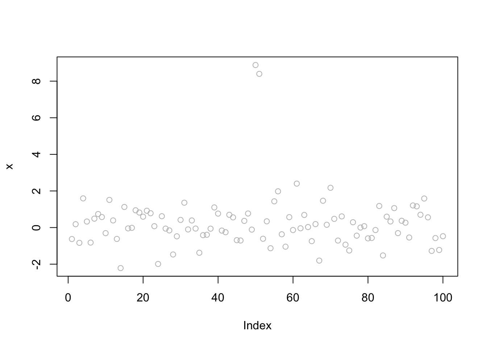
| Version | Author | Date |
|---|---|---|
| 4e79e79 | stephens999 | 2018-12-08 |
Now we set up the design matrix \(X\) to use a “step function” basis.
n = length(y)
X = matrix(0,nrow=n,ncol=n-1)
for(j in 1:(n-1)){
for(i in (j+1):n){
X[i,j] = 1
}
}Now try L0Learn with L0 penalty. (Note: The CD algorithm is the faster and less accurate one.)
y.l0.CD = L0Learn.fit(X,y,penalty="L0",maxSuppSize = 100,autoLambda = FALSE,lambdaGrid = list(seq(0.01,0.001,length=100)),algorithm="CD")
y.l0.CDPSI = L0Learn.fit(X,y,penalty="L0",maxSuppSize = 100,autoLambda = FALSE,lambdaGrid = list(seq(0.0076,0.0075,length=1000)),algorithm="CDPSI")
plot(y,main="green=CDPSI; red=CD")
lines(predict(y.l0.CD,newx=X,lambda=y.l0.CD$lambda[[1]][min(which(y.l0.CD$suppSize[[1]]>1))]),col=2)
lines(predict(y.l0.CDPSI,newx=X,lambda=y.l0.CDPSI$lambda[[1]][min(which(y.l0.CDPSI$suppSize[[1]]>1))]),col=3)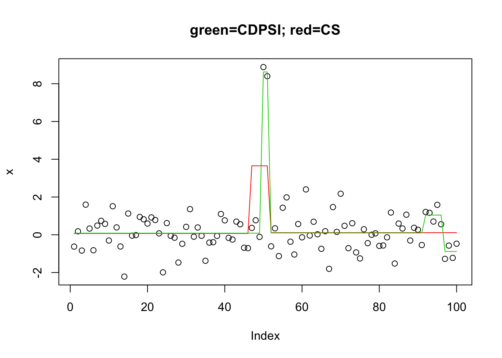
| Version | Author | Date |
|---|---|---|
| 8981592 | stephens999 | 2018-12-14 |
| 4e79e79 | stephens999 | 2018-12-08 |
head(y.l0.CD$suppSize[[1]])[1] 2 2 2 2 2 2head(y.l0.CDPSI$suppSize[[1]])[1] 4 4 4 4 4 4Note that the more sophisticated CSPSI algorithm does not find the correct solution here because it does not give 2 changepoints - all solutions have at least 4 changepoints. I guess it might be possible to solve this by playing with the penalty?
Indeed, Rahul Mazumder sent me this code, which indeed recovers the solution with both algorithms:
y.l0.CD = L0Learn.fit(X,y,penalty="L0",maxSuppSize = 100,autoLambda = FALSE,lambdaGrid = list(seq(0.001,1,length=100)),
algorithm="CD")
y.l0.CDPSI = L0Learn.fit(X,y,penalty="L0",maxSuppSize = 100,autoLambda = FALSE,lambdaGrid = list(seq(0.001,1,length=100)),algorithm="CDPSI")
plot(y,main="green=CDPSI; red=CD")
lines(predict(y.l0.CD, newx=X, lambda=y.l0.CD$lambda[[1]][50]),col=2) #
lines(predict(y.l0.CDPSI, newx=X, lambda=y.l0.CDPSI$lambda[[1]][50]),col=3) 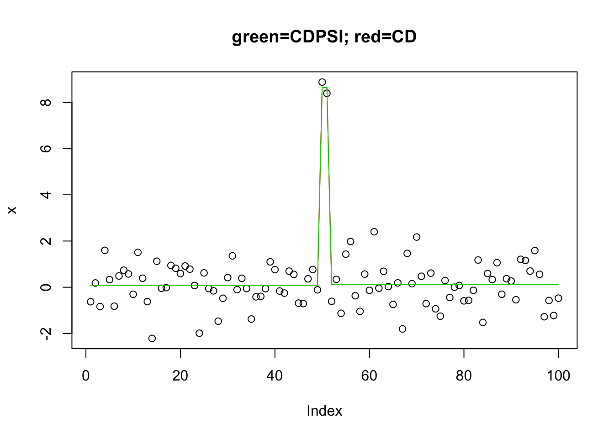
| Version | Author | Date |
|---|---|---|
| 8981592 | stephens999 | 2018-12-14 |
I found it interesting that this did not work when I reversed the lambda. I guess this is maybe analogous to the difference between “backwards” vs “forwards” selection?
y.l0.CD = L0Learn.fit(X,y,penalty="L0",maxSuppSize = 100,autoLambda = FALSE,lambdaGrid = list(seq(1,0.001,length=100)),
algorithm="CD")
y.l0.CDPSI = L0Learn.fit(X,y,penalty="L0",maxSuppSize = 100,autoLambda = FALSE,lambdaGrid = list(seq(1,0.001,length=100)),algorithm="CDPSI")
plot(y,main="green=CDPSI; red=CD")
lines(predict(y.l0.CD, newx=X, lambda=y.l0.CD$lambda[[1]][50]),col=2) # recovers the soln
lines(predict(y.l0.CDPSI, newx=X, lambda=y.l0.CDPSI$lambda[[1]][50]),col=3) #recovers the soln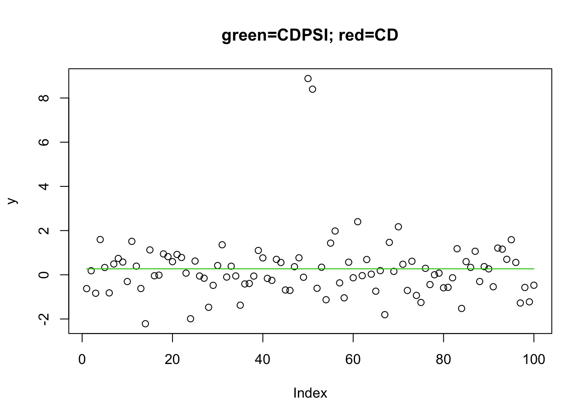
| Version | Author | Date |
|---|---|---|
| 8981592 | stephens999 | 2018-12-14 |
Interestingly(?) the CDPSI does actually recover the correct solution at a different lamdba:
y.l0.CDPSI$suppSize[[1]] [1] 0 0 0 0 0 0 0 0 0 0 0 0 0 0 0 0 0 0 0 0 0 0 0
[24] 0 0 0 0 0 0 0 0 0 0 0 0 0 0 0 0 0 0 0 0 0 0 0
[47] 0 0 0 0 0 0 0 0 0 0 0 0 0 0 0 0 0 0 0 0 0 0 0
[70] 0 0 0 0 0 0 0 0 0 0 0 0 0 0 0 0 0 0 0 0 0 0 0
[93] 0 0 0 0 0 0 2 20plot(y,main="green=CDPSI; red=CD")
lines(predict(y.l0.CD, newx=X, lambda=y.l0.CD$lambda[[1]][99]),col=2) # recovers the soln
lines(predict(y.l0.CDPSI, newx=X, lambda=y.l0.CDPSI$lambda[[1]][99]),col=3) #recovers the soln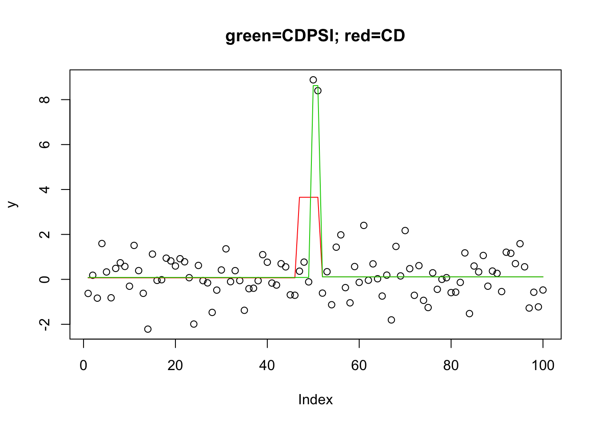
| Version | Author | Date |
|---|---|---|
| 8981592 | stephens999 | 2018-12-14 |
For comparison we can look at the lasso solution. The L1 penalty has the advantage of being convex, but the disadvantage that it either over-selects or under-shrinks.
y.glmnet.0 = glmnet(X,y)
suppsize = apply(y.glmnet.0$beta,2,function(x){sum(abs(x)>0)})
suppsize s0 s1 s2 s3 s4 s5 s6 s7 s8 s9 s10 s11 s12 s13 s14 s15 s16 s17
0 1 1 2 7 7 7 7 7 8 9 10 10 11 12 13 13 14
s18 s19 s20 s21 s22 s23 s24 s25 s26 s27 s28 s29 s30 s31 s32 s33 s34 s35
17 18 19 21 21 22 26 30 36 38 44 47 50 51 52 55 61 63
s36 s37 s38 s39 s40 s41 s42 s43 s44 s45 s46 s47 s48 s49 s50 s51 s52 s53
65 66 68 71 72 73 76 79 79 83 84 86 86 87 87 88 88 90
s54 s55 s56 s57 s58 s59 s60 s61 s62 s63 s64
92 93 93 93 93 93 93 95 96 96 96 plot(y, main="lasso solution with 2 changepoints")
lines(predict(y.glmnet.0, newx=X, s=y.glmnet.0$lambda[4]),col=3)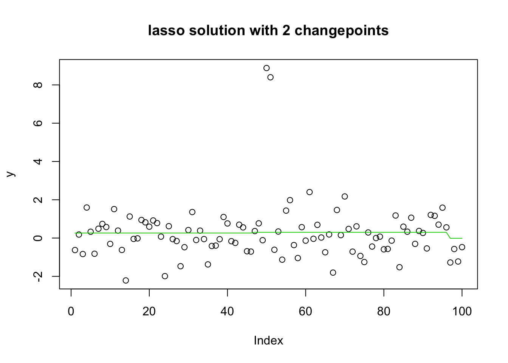
plot(y, main="lasso solution with 19 changepoints")
lines(predict(y.glmnet.0, newx=X, s=y.glmnet.0$lambda[20]),col=3)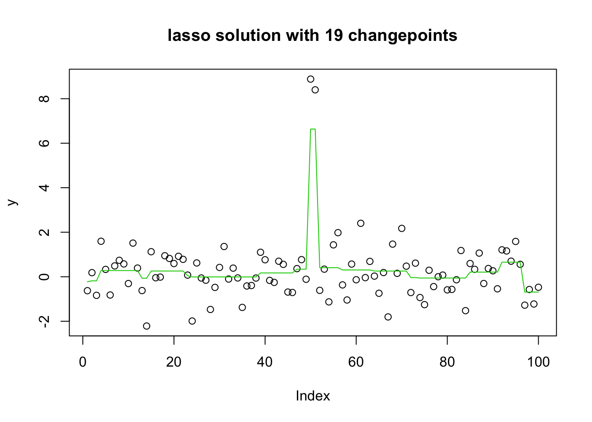
plot(y, main="lasso solution with 50 changepoints")
lines(predict(y.glmnet.0, newx=X, s=y.glmnet.0$lambda[30]),col=3)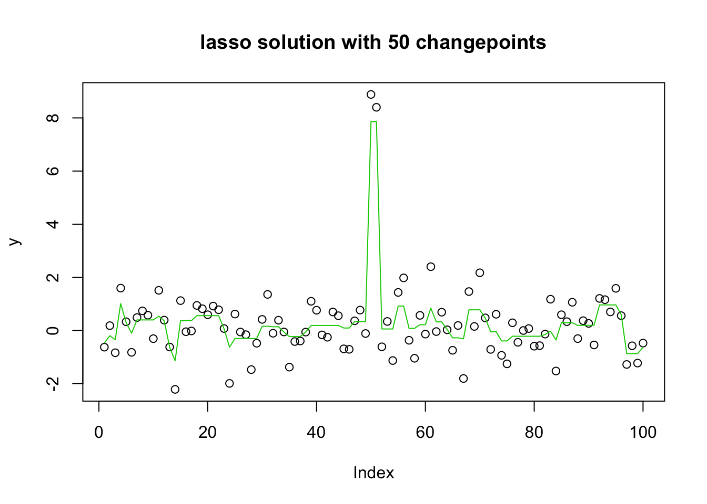
For completeness also include trendfilter from genlasso (should be solving same problem as glmnet above)
y.tf0 = trendfilter(y,ord=0)
y.tf0.cv = cv.trendfilter(y.tf0)Fold 1 ... Fold 2 ... Fold 3 ... Fold 4 ... Fold 5 ... opt = which(y.tf0$lambda==y.tf0.cv$lambda.min) #optimal value of lambda
yhat= y.tf0$fit[,opt]
plot(y)
lines(yhat,col=2)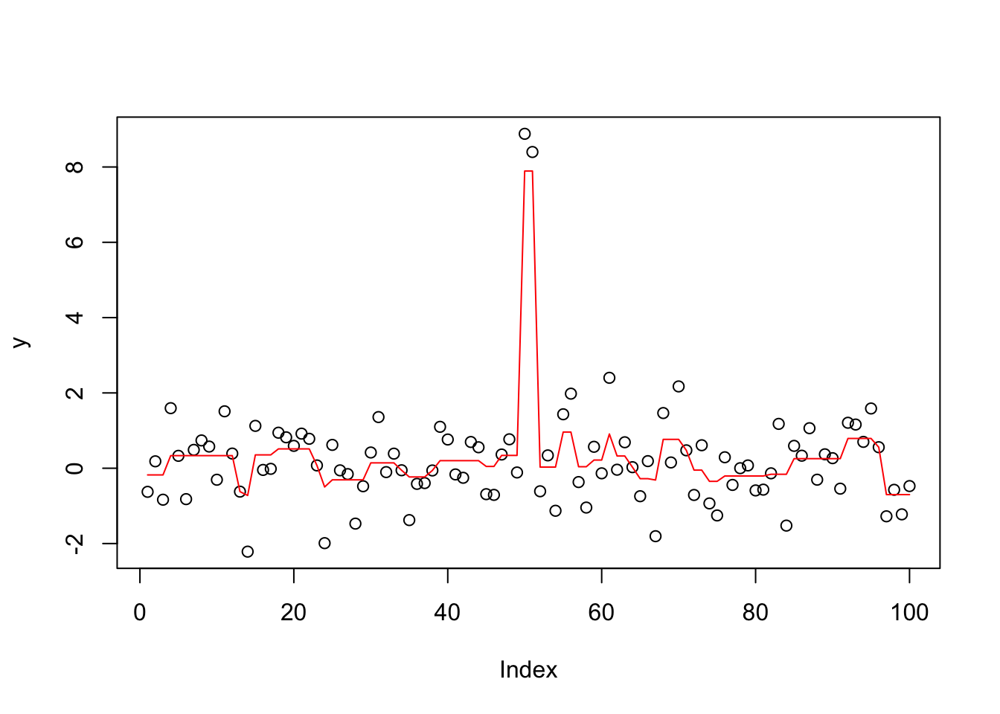
The example is designed to be more challenging (it is also more contrived). We use the same simulated data, but with basis functions that are linear instead of steps (basically we apply “order 2 trendfiltering” to order 1 data). The true solution in this basis is sparse with 4 elements: each changepoint needs two very carefully-balanced coefficients to capture it, which makes this harder than before.
First create the linear basis:
X1 = apply(X,2,cumsum)
plot(X1[,1])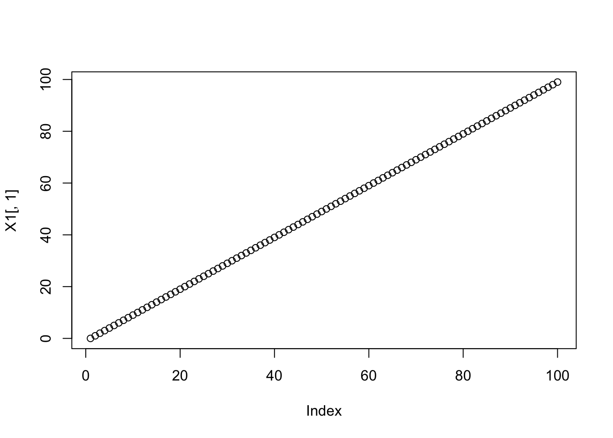
plot(X1[,50])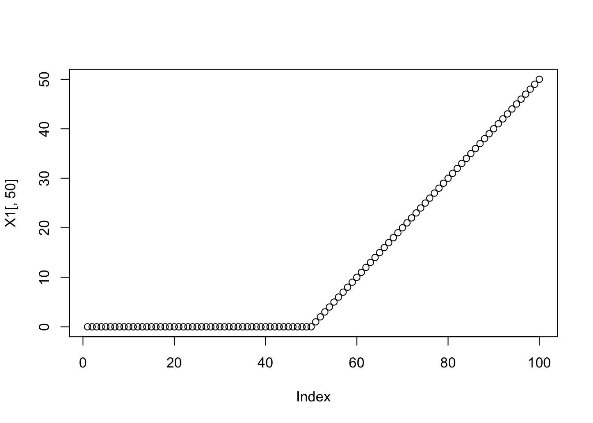
Just to demonstrate that the true mean is represented sparsely in this basis:
b = rep(0,99)
b[49] = 8
b[50] = -8
b[51] = -8
b[52] = 8
plot(y)
lines(X1 %*% t(t(b)))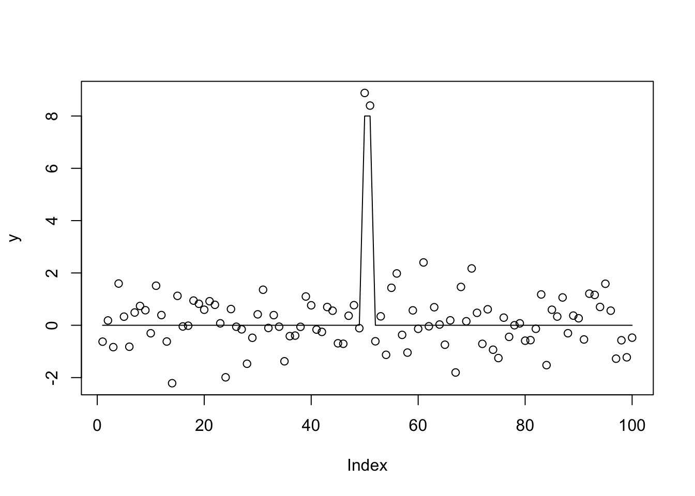
Now lasso using glmnet. We note it has convergence problems…
y.glmnet.1 = glmnet(X1,y)Warning: from glmnet Fortran code (error code -53); Convergence for 53th
lambda value not reached after maxit=100000 iterations; solutions for
larger lambdas returnedsuppsize = apply(y.glmnet.1$beta,2,function(x){sum(abs(x)>0)})
suppsize s0 s1 s2 s3 s4 s5 s6 s7 s8 s9 s10 s11 s12 s13 s14 s15 s16 s17
0 1 1 1 1 1 1 1 2 2 2 2 2 2 3 3 4 5
s18 s19 s20 s21 s22 s23 s24 s25 s26 s27 s28 s29 s30 s31 s32 s33 s34 s35
7 8 9 7 7 7 8 9 8 8 7 6 6 12 14 12 17 20
s36 s37 s38 s39 s40 s41 s42 s43 s44 s45 s46 s47 s48 s49 s50 s51
16 16 17 19 15 15 15 17 22 21 20 23 24 26 24 24 plot(y, main="lasso solution with support 4")
lines(predict(y.glmnet.1, newx=X1, s=y.glmnet.0$lambda[16]),col=3)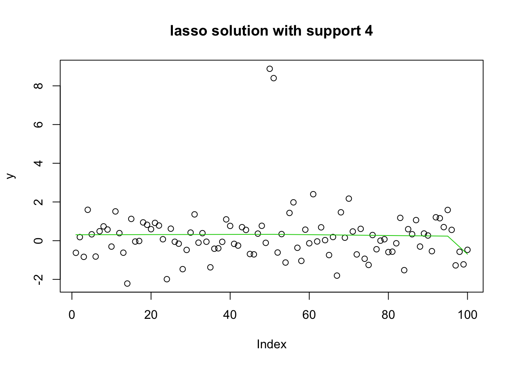
plot(y, main="lasso solution with support 6")
lines(predict(y.glmnet.1, newx=X1, s=y.glmnet.0$lambda[30]),col=3)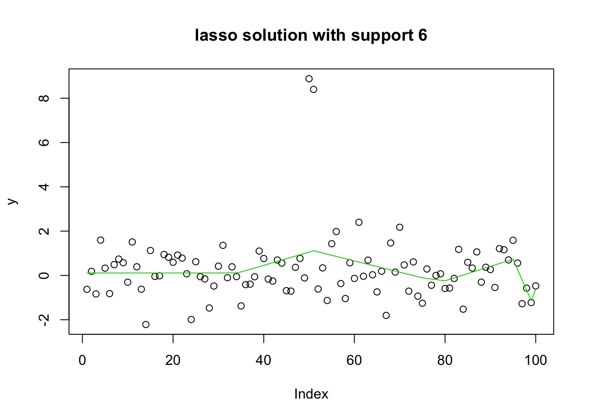
plot(y, main="lasso solution with support 24")
lines(predict(y.glmnet.1, newx=X1, s=y.glmnet.0$lambda[51]),col=3)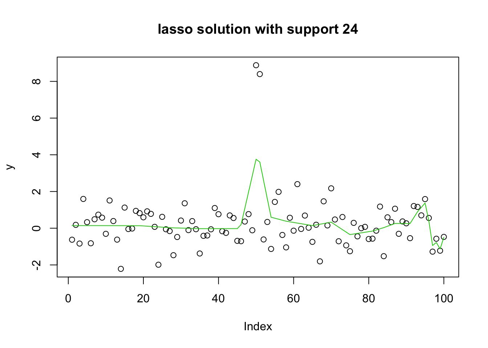
The genlasso algorithm is better suited to this example:
y.tf1 = trendfilter(y,ord=1)
y.tf1.cv = cv.trendfilter(y.tf1)Fold 1 ... Fold 2 ... Fold 3 ... Fold 4 ... Fold 5 ... opt = which(y.tf1$lambda==y.tf1.cv$lambda.min) #optimal value of lambda
yhat= y.tf1$fit[,opt]
plot(y)
lines(yhat,col=2)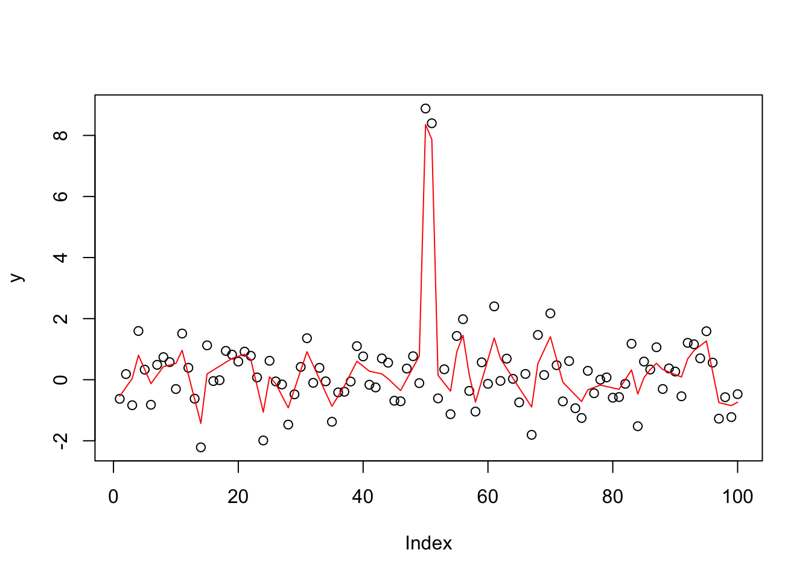
Try L0Learn with this new basis (X1):
y.l0.CD.1 = L0Learn.fit(X1,y,penalty="L0",maxSuppSize = 100,autoLambda = FALSE,lambdaGrid = list(seq(0.0001,.1,length=100)),
algorithm="CD")
y.l0.CDPSI.1 = L0Learn.fit(X1,y,penalty="L0",maxSuppSize = 100,autoLambda = FALSE,lambdaGrid = list(seq(0.0001,.1,length=100)),algorithm="CDPSI")
y.l0.CDPSI.1$suppSize[[1]] [1] 10 8 8 8 8 8 8 8 8 8 8 8 8 8 8 8 8 8 8 8 8 8 8
[24] 8 8 8 8 8 8 8 8 8 8 8 8 8 8 8 8 8 8 8 8 8 8 8
[47] 8 8 8 8 8 8 8 8 8 8 8 8 8 8 8 8 8 8 8 8 8 5 5
[70] 5 5 5 5 5 5 5 5 5 5 5 5 5 5 5 5 5 5 5 5 5 5 5
[93] 5 5 5 5 5 5 5 5y.l0.CD.1$suppSize[[1]] [1] 10 8 8 8 8 8 7 7 7 7 7 7 7 7 7 7 7 7 7 7 7 7 7
[24] 7 7 7 7 7 7 7 7 7 7 7 7 7 7 7 7 7 7 7 7 7 7 7
[47] 7 7 7 7 7 7 7 7 7 7 7 7 7 7 7 7 7 7 7 7 7 4 4
[70] 4 4 4 4 4 4 4 4 4 4 4 4 4 4 4 4 4 4 4 4 4 4 4
[93] 4 4 4 4 4 4 4 3plot(y,main="green=CDPSI; red=CD")
lines(predict(y.l0.CD.1, newx=X1, lambda=y.l0.CD.1$lambda[[1]][50]),col=2) #
lines(predict(y.l0.CDPSI.1, newx=X1, lambda=y.l0.CDPSI.1$lambda[[1]][50]),col=3) 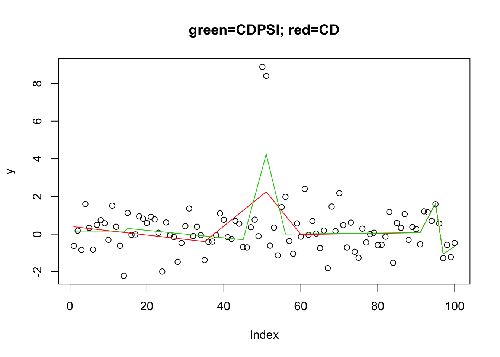
sessionInfo()R version 3.5.1 (2018-07-02)
Platform: x86_64-apple-darwin15.6.0 (64-bit)
Running under: OS X El Capitan 10.11.6
Matrix products: default
BLAS: /Library/Frameworks/R.framework/Versions/3.5/Resources/lib/libRblas.0.dylib
LAPACK: /Library/Frameworks/R.framework/Versions/3.5/Resources/lib/libRlapack.dylib
locale:
[1] en_US.UTF-8/en_US.UTF-8/en_US.UTF-8/C/en_US.UTF-8/en_US.UTF-8
attached base packages:
[1] stats graphics grDevices utils datasets methods base
other attached packages:
[1] glmnet_2.0-16 foreach_1.4.4 genlasso_1.4 igraph_1.2.2 Matrix_1.2-14
[6] L0Learn_1.0.7
loaded via a namespace (and not attached):
[1] Rcpp_1.0.0 compiler_3.5.1 pillar_1.3.0
[4] git2r_0.23.0 plyr_1.8.4 workflowr_1.1.1
[7] bindr_0.1.1 iterators_1.0.10 R.methodsS3_1.7.1
[10] R.utils_2.7.0 tools_3.5.1 digest_0.6.18
[13] evaluate_0.12 tibble_1.4.2 gtable_0.2.0
[16] lattice_0.20-35 pkgconfig_2.0.2 rlang_0.2.2
[19] yaml_2.2.0 bindrcpp_0.2.2 stringr_1.3.1
[22] dplyr_0.7.7 knitr_1.20 tidyselect_0.2.5
[25] rprojroot_1.3-2 grid_3.5.1 glue_1.3.0
[28] R6_2.3.0 rmarkdown_1.10 reshape2_1.4.3
[31] purrr_0.2.5 ggplot2_3.0.0 magrittr_1.5
[34] whisker_0.3-2 codetools_0.2-15 backports_1.1.2
[37] scales_1.0.0 htmltools_0.3.6 assertthat_0.2.0
[40] colorspace_1.3-2 stringi_1.2.4 lazyeval_0.2.1
[43] munsell_0.5.0 crayon_1.3.4 R.oo_1.22.0 This reproducible R Markdown analysis was created with workflowr 1.1.1